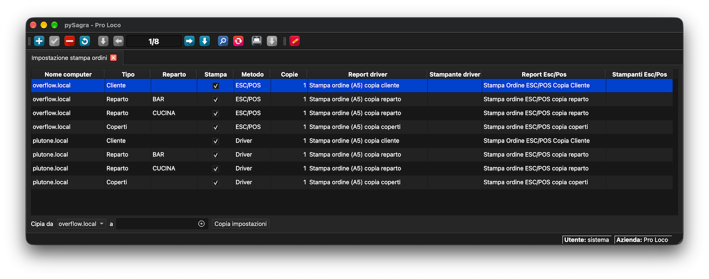

Impostazione stampa ordini
Quando si salva un ordine il programma stampa le sue copie:
- la copia per il cliente
- la copia coperti
- una copia per ogni reparto che ha articoli nell'ordine
Questa scheda determina, per ogni computer, come e dove stampare ciascuna copia.

Impostazioni:
- Nome computer: il computer per cui vale l'impostazione; quando si aggiunge una riga viene proposto quello corrente
- Tipo: Cliente, Coperti o Reparto
- Reparto: solo per il tipo Reparto, il reparto della copia; per gli altri tipi resta vuoto
- Stampa copia: se spuntato la copia viene stampata; attenzione che prevale il parametro in Impostazioni
- Metodo di stampa: Driver (una stampante del sistema operativo) o ESC/POS (una stampante
termica comandata direttamente, vedi la scheda Stampanti ESC/POS)
- Copie: quante copie stampare
- Report driver: il report da utilizzare con il metodo Driver
- Stampante driver: la stampante da utilizzare con il metodo Driver
- Report Esc/Pos: il report da utilizzare con il metodo ESC/POS
- Stampante Esc/Pos: la stampante da utilizzare con il metodo ESC/POS
Ogni computer ha una sola riga per tipo di stampa e, per le copie reparto, per reparto. Ogni riga può avere
i parametri di tutti e due i metodi: se una stampante si guasta, basta cambiare il Metodo di stampa per
passare all'altra senza riscrivere nulla.
Senza stampante la copia viene generata comunque in anteprima. Le opzioni di Copia di stampa dell'ordine delle Impostazioni
accendono o spengono ciascun tipo di copia per tutti i computer.
Copiare le impostazioni
Cliccando su Copia impostazioni si copiano tutte le righe di un computer (Copia da) su un computer nuovo
(a): è il modo più veloce per preparare una nuova cassa uguale a un'altra. Se il computer di destinazione
ha già un'impostazione dello stesso tipo e reparto, non viene copiato nulla.
Inizio pagina